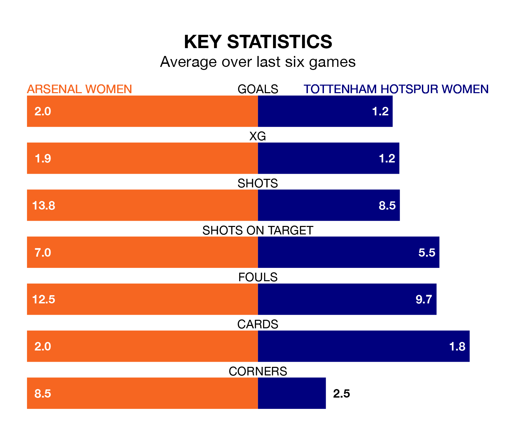

Tottenham Hotspur Women travel to Arsenal Women on Sunday lunchtime in the FA Women's Super League.
The visitors come into the game on the back of a defeat in their last match, having lost to Aston Villa Women 2-1 at home, with a goal from Amy Turner.
The Gunners, meanwhile, won their last match, 3-1 against Manchester United Women, with their goals scored by Kim Little, Geyse da Silva Ferreira and Cloe Lacasse.
With 32 goals in 14 games so far this season, Arsenal are the league's third-highest scorers with 2.3 goals per game. And they are conceding fewer than average, letting in 14 goals at a rate of 1.0 per game.
Tottenham Hotspur, meanwhile, are below average scorers, with 1.5 goals per game, compared to a league average of 1.6. They have conceded 2.0 goals per game.
In the last 10 years, Arsenal and Tottenham Hotspur have played each other on 12 occasions. Arsenal won eight of them, Tottenham Hotspur one, and they drew three times.
On average, the Gunners scored 3.2 goals and Spurs 0.8 in those matches.
Their last meeting was on December 16, when Tottenham Hotspur won 1-0 at home.
In Manuela Zinsberger, the Gunners can rely on one of the league's safest pair of hands. She has kept three clean sheets in her 12 appearances this season, and only two other 'keepers – Manchester City Women's Khiara Keating and Manchester United Women's Mary Earps – have been able to prevent the opposition scoring on more occasions in the FA Women's Super League.
In Spurs's net, Barbara Votíková has one clean sheet in five games. She has conceded a goal every 64 minutes, 50% more often than the 98 minutes between goals for Zinsberger.
The hosts are third in the table after 14 games, of which they have won 10 and drawn one, earning 31 points.
The away side are three places behind Arsenal in sixth, with five wins and four draws putting them on 19 points.
Arsenal are in reasonable form in the FA Women's Super League, with four wins and two losses from their last six games.
With two wins and a draw over that period, Tottenham Hotspur's form is worse – they have taken seven points from 18, compared to the Gunners's 12.
Updated: 10:08 (UTC), 23/02/24